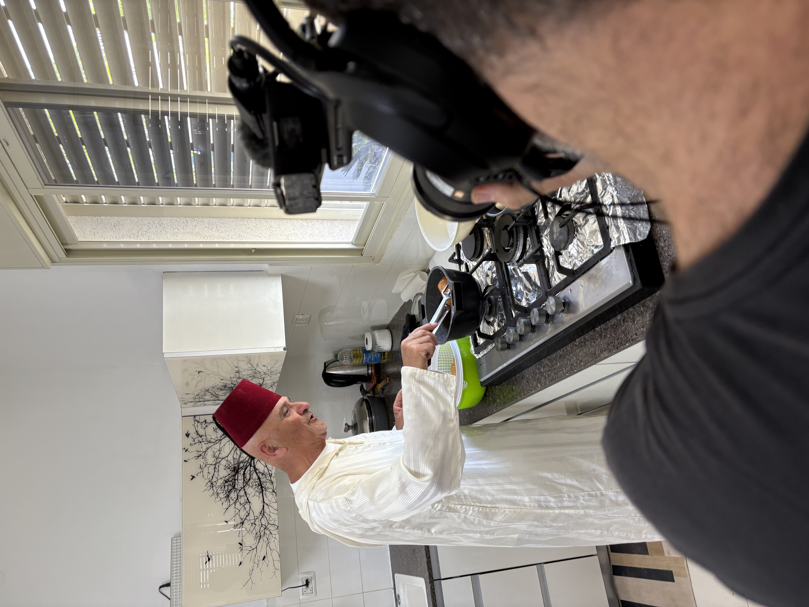

נועה אקסינר, עמיתה שלי ברשת ב', התחתנה עם בית שאני ומצאה את עצמה שוב ושוב בעיר הזו. ברגע שהגעתי, שאלתי אותה: טוב, מה יש לאכול כאן? והנה, היא הביאה אותי לבדוק בעצמי. התחלנו במתחם הסריה, הליבה העתיקה של העיר, מבנים עותמאניים ושרידים רומיים. מה שמספרים פה, אמרה נועה, זה שאם תיקח את ותתקע אותו באדמה, אתה כנראה תמצא משהו מעניין.
צעדנו כמה צעדים מהמרכז הישן והגענו למגרש חנייה גדול. שם, צמוד לאמפיתיאטרון הרומי העתיק, נמצאת מסעדת בזיליקה. מבחוץ קשה לדמיין, אבל מבפנים — זה על גבול התל אביבי. לא מהסוג שהייתם מצפים למצוא בבית שאן.
בפנים חיכה לנו אלירן, מוזיקאי שהפך לשף. שאלתי אותו מה זה אוכל פיוז'ן. הוא ענה שזה אוכל שמשלב את כל העולמות — מרוקאי, איטלקי, יפני, וגם דברים סופר מסורתיים. שאלתי אם יש ביקוש בבית שאן. ענק, ענה. הסיבה פשוטה: אין פה מסעדות. יש סטקיות, יש פיצריות, אבל אין באמת מסעדות.
"אין פה מסעדות. אין כלום. יש סטקיות, יש פיצריות. אבל אין באמת מסעדות. אז הביקוש — ענק."
— אלירן, בזיליקה format_quote

מסעדת בזיליקה
אלירן · פיוז'ן · צמוד לאמפיתיאטרון הרומי
המלצרית התחילה להוציא מנות. ועוד מנות. ועוד. קובלה מתבלים, קרפצ'ו מזרח תיכוני חדש, סלמון בכבישה חמה. אלירן ואשתו חזרו לבית שאן מתל אביב. שאלתי למה. ציפינו לשקט, ענה. היינו במרוץ מטורף. הקצב שלנו הוא איטי, זה לא האזור הטבעי שהיה לנו שם.
נועה לא האמינה שמישהי מגישה לה בבית שאן מנה עם שחלות עגבנייה למעלה. שאלנו איך הבית שאנים מקבלים את זה. התשובה: באהבה. הם רוצים לקבל את זה, זה חסר להם. הם רוצים לצלם, להגיד שהם היו, שהם אכלו, שהם עפו באוויר.
"לא חשבתי שאני אשב בבית שאן ומישהי תגיש לי מנה עם שחלות עגבנייה למעלה."
— נועה אקסינריש התפתחות מטורפת עכשיו בבית שאן, סיפר אלירן. הרבה שעזבו חוזרים, כי מבינים שפה יותר כדאי ויותר שווה לגור. הרבה יותר זול, הרבה יותר נגיש. כל התחומים מתקדמים.
יצאנו מבזיליקה, צעדנו כמה דקות בשמש של בית שאן, והגענו לתחנת דלק. שם, בצד בשקט, חיכתה סטקיית בקסי. שלושים שנה באותו מקום. שרון, הבעלים, עובד מאחורי הדלפק כמו מכונה.
הזמנתי קציצות, אבל הכוכבת האמיתית הייתה הפרנה — לחם בית בלי צורה מוגדרת, קצת ענני, שנאפה בידיים. נועה אמרה שזה מה שנקרא בבית שאן לחם בית. טעמתי ולא האמנתי. פרנות שאני קונה במכולת לילדים — זה בכלל לא אותה משפחה. הלכתי לחפש את שרון כדי להגיד לו, ומצאתי אותו בחדר אחורי ליד התנור, מכין פרנות חדשות.

סטקיית בקסי
שרון · 30 שנה · פרנה ביתית
שאלתי כמה זמן לוקח. עבודת יד, ענה. 35 דקות מהרגע שמתחילים עד שמוציאים פיתה, כולל אפייה. הוא עושה פרנות גם באומן, בחדרי המלון. 20 חברים, והוא מכין להם שם את הלחם. עשרים וחמש שנה של פרנות. המתכון מהאבא, הוא היה הבכור באחים, ואמר לו — אל תמכור.
"עבודת יד. 35 דקות אני מוציא פיתה, אפילו פחות. כולל אפייה."
— שרון, בקסי format_quote
אחרי כל הבצק הזה, הגיע הזמן לעוד בצק, אבל הפעם של קינוח. חם חם, קינוח בית שאני שלא תמצאו בשום חנות. נסענו לקריית רבין, אחת השכונות החדשות.
בפתח הבית, לבושים בבגדים מרוקאיים מסורתיים, חיכו לנו חנה ואשר בן שטרית. בפנים — בית רחב ידיים, מאוד מואר, מאוד מודרני, בסתירה מוחלטת ללבוש. הבצק כבר תפח יותר מדי, אז ישר נכנסנו למטבח והתחלנו לטגן.
חם חם של חנה
חנה ואשר בן שטרית · קינוח ביתי · קריית רבין
חם חם זה בצק שתופח, מתטגן בשמן עמוק, ואז טובלים אותו בסירופ סוכר עם לימון וזעפרן. אוכלים אותו בשמחות ולהבדיל גם באבל. חנה למדה את המתכון בעיקר מתוך הזיכרון שלה כילדה ממשפחת אלמליה שהיתה מכינה את זה כל בוקר. הילדים היו מחכים בתור, קונים, עוטפים טוב טוב, ולוקחים לבית ספר.
השם חם חם נולד כי המוכר היה צועק בחוץ: חם, חם, חם, חם. חנה ניסתה לבד — פעם ראשונה, שנייה, בשלישית יצא מעולה. היום בחנוכה ובחגים היא מפוצצת בהזמנות. היא הייתה מורה לנגרות ארבעים ואחת שנה, ויום אחד אחותה אמרה לה: למה את לא מוכרת את הדבר הזה?
"הוא היה צועק בחוץ חם, חם, חם, חם. אמרתי אני חייבת לנסות. פעם ראשונה, שנייה, פעם שלישית יצא לי מעולה."
— חנה בן שטרית format_quote
ישבנו לשולחן עם תה מרוקאי חם מקומקום מסורתי. הקינוח הגיע חם ודולף סירופ. שאלתי את חנה מה עושים עם הזעפרן. שמים שתיים שלוש שערות בתוך הסירופ, ענתה. הקצת הזה עלה לה כמעט חמישים שקלים.
נפרדנו מחנה ואשר ונסענו לקצה העיר, להשקיף על הרי גלעד. נועה אמרה שבית שאן עדיין בהילוך שני, מנסה להניע לשלישי. שאלתי אותה אם היא חושבת שהעיר תגיע לשם. אני בטוחה שהיא בדרך, ענתה. ברגע שמגיעים לפה אנשים חדשים, גם ההתחדשות מגיעה. זה חייב לקרות.